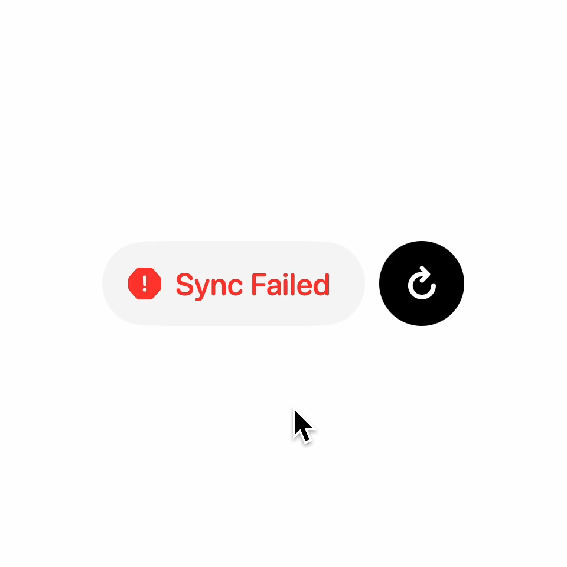

Sync Failed
Syncing
State: Sync Failed
Click Retry
Replay Video Demo
Scale: Original (144px)
Auto Loop: OFF
FRAME INSPECTOR (1:1 Keyframe Parity Checker)
50% Reference Overlay
F1: Idle Failed
F2: Early Sync
F3: Mid Sync
F4: Settled Sync
F5: Spring Overshoot
F6: Settled Failed
F7: Cycle 2 Sync
F8: Cycle 2 Spin
F9: Cycle 2 Hold
Frame 1 (video 0.02s): Resting "Sync Failed" state. Capsule 445x144px, Button 144x144px, Gap 24px, Total 615px, Center X=480.0px.
Based on contextual feedback interaction by
Nitish Khagwal (@nitishkmrk)
.